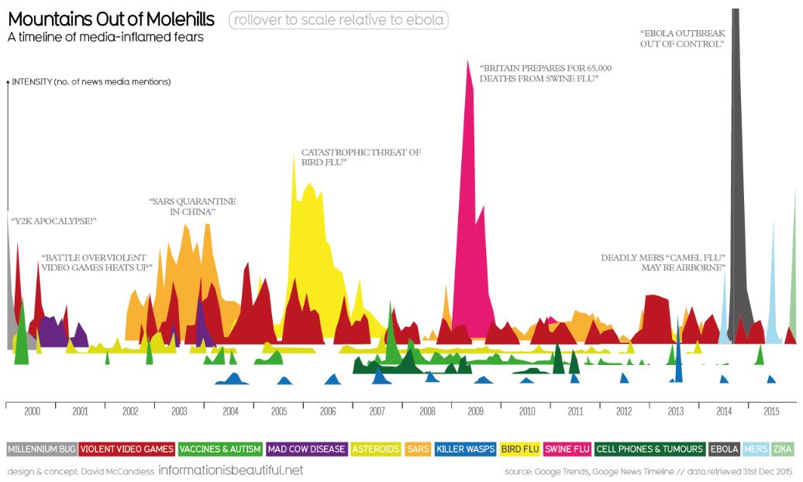
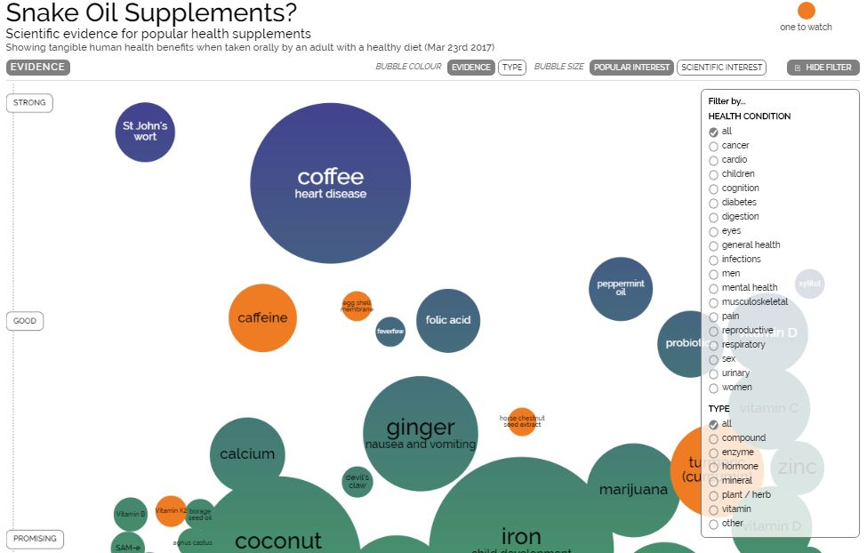
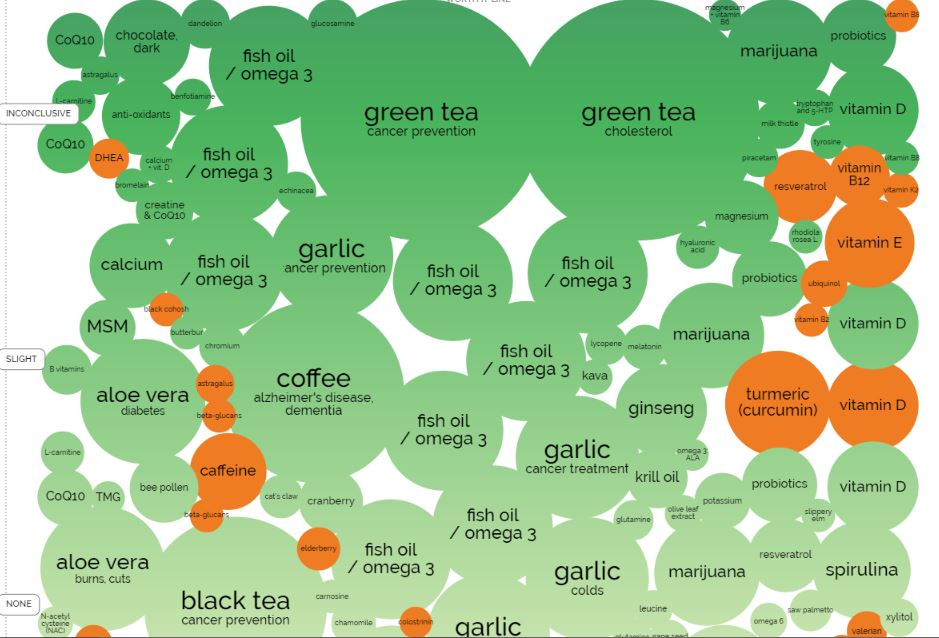

5/1/17
Information Is Beautiful
Information design is (or in theory should be) the most unbiased and honest subcategory of design. In its pure form, information design aims to present data in a clear, organized, and engaging way. One designer that specializes in this field is David McCandless. David is an author, writer, data-journalist and designer from London who creates sleek, interactive infographs based on his own in-depth research.
The goal of David and his team of designers and researchers is, as stated in the Our Mission section of the About page of informationisbeautiful.net, ...to help everyone make better, clearer, more informed decisions about the world
. Now here is a goal that perfectly illustrates the two main themes of this blog: Honesty and Purpose. ...we base all our graphics & visualizations on facts & data. Illustrate multiple perspectives (even we don't agree with them)
, continues the section.
I don't want to jump to conclusions and say that this text has restored my faith in graphic design, but paired with the actual graphs themselves it's pretty darn close. It's no wonder that his two books, Information is Beautiful and Knowledge is Beautiful, were published across the world in multiple languages. Just see for yourself:
  The first two images are screenshots of the interactive Snake Oil Supplements visualization. It is both eye-catching and simple--the information is presented in bubbles of cool colors with specks of hot here and there. Everything you need to know to understand the chart (including the scale and filter), is given in a clear, cohesive way. The visualizations even resemble Snake Oil. Clicking on each bubble reveals notes on each supplement, making for a quick and informative read.
Now, let's talk purpose. This chart was made to inform people on how valid the health benefits of certain supplements are. There is no bias here, only in-depth research made simple through creative form.
The next image is of the visualization titled Mountains Out of Mole Hills. Each hill represents the intensity of the hype of the given topic, brought on by mentions in media outlets. Once again, the shapes, colors, and form are enticing with their playful simplicity. And, once again, the way the information is represented relates to the title of it (the information is literally in the shape of mountains).
Information truly is beautiful, especially in the hands of David McCandless.